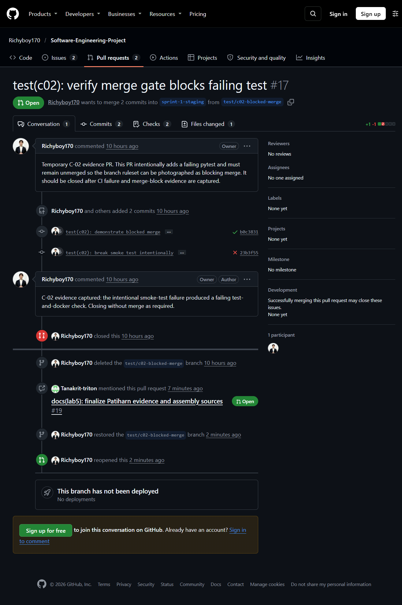
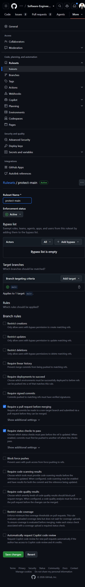

| Team member | Student ID | GitHub | Primary Lab 5 role |
|---|---|---|---|
| Patiharn Liangkobkit | 66070503489 | @Richyboy170 | CI, quality gates, release pipeline, evidence assembly |
| Tanakrit Sunthonwetchapong | 67070503464 | @Tanakrit-triton | Docker, GCP resources, deployment and persistence |
| Repository | Public URL | Project / region |
|---|---|---|
| GitHub repository | QuickOrder | cpe334-quickorder / asia-southeast1 |
| Rubric part | Artifact | IDs / versions | Result |
|---|---|---|---|
| 0 | Team, running commit, evidence index, contribution table | 12c18be; quickorder-00003-55s | Complete |
| 1 | ci-docker.yml, PR #18, PR #17, protect-main ruleset | C-01, C-02 | Normal pass and blocked failure captured |
| 2/3 | Tanakrit Part 2/3 PDF | C-03 to C-05, R-01 to R-04 | Complete |
| 4 | Deploy run 44882991816, deployment.md | C-06, revision 00003-55s | Commit and digest identified |
| Member | Issues / PRs | Contribution |
|---|---|---|
| Patiharn Liangkobkit | Issue #10, PR #9, PR #17, PR #18, PR #19 | CI quality gate, rulesets, deployment/release documentation, C-01/C-02/C-06 evidence, PDF assembly |
| Tanakrit Sunthonwetchapong | Issues #14/#15, PR #11/#12/#13/#16, PR #18 | GCP provisioning, Docker/configuration, WIF, smoke test, Cloud SQL/persistence evidence, release approval |
Release PR #18 ran test-and-docker. The check passed on workflow 44832537856. It validates script syntax and offline deployment tests, Prisma/PostgreSQL setup and backend tests, frontend build, and the production Docker image.
Backend test summary: 32 tests passed across the Vitest/Supertest suite, with zero failures. The frontend build and Docker image build completed successfully.
Temporary PR #17 intentionally changed the smoke-test fixture to return an empty menu list. Workflow 44832287247 produced test-and-docker: FAILURE. The PR was closed without merge and the temporary branch was deleted.

test-and-docker check and the merge box blocked by the required check. The branch and PR were closed after the screenshot.
protect-main requires one approval and the test-and-docker status check.The repository ruleset protect-sprint1-release also protects staging and main. Ruleset protect-main requires one approval and the passing test-and-docker status check on main.
| Work | Evidence |
|---|---|
| Added CI and Docker quality gate | PR #9, issue #10 |
| Added release workflow and release script | PR #9, deploy/release.sh, deploy.yml |
| Added rulesets and merge protection | protect-sprint1-release, protect-main |
| Captured C-01 and C-02 evidence | PR #18 and PR #17 |